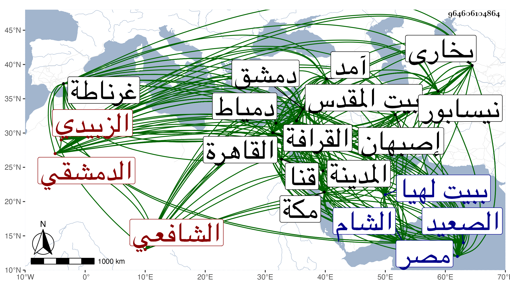

0902Sakhawi.DawLamic.ITO20230111-ara1.EIS1600.964606104864
Biography ID: 964606104864
305
محمد بن محمد عبد الله بن خيضر بن سليمان بن داود بن فلاح بن ضميدة بالمعجمة مصغر القطب أبو الخير الزبيدي بالضم البلقاوي الأصل الترملي الدمشقي الشافعي والد النجم أحمد الماضي ويعرف بالخيضري نسبة لجد أبيه . ولد في ليلة الاثنين منتصف رمضان سنة إحدى وعشرين وثمانمائة ببيت لهيا من دمشق ونشأ يتيما في كفالة أمه وهي أخت التقي أبي بكر بن علي الحريري الآتي ولذا فارق سلفه الذين هم من عرب البلقا وانحاز لطائفة الفقهاء فقرأ القرآن عند الشموس الأذرعي وابن قيسون وابن النجار وصلى به على يديه التراويح على العادة فيما ذكر وقال إنه حفظ التنبيه وألفية الحديث والنحو والملحة ومختصر ابن الحاجب الأصلي وأنه عرض التنبيه على قضاة مصر إلا الحنفي في توجههم إلى آمد سنة ست وثلاثين وقرأت بخطى في موضع آخر أنه عرض على كل من شيخنا والمحب ابن نصر الله بدمشق حينئذ خطبة التنبيه والطهارة منه وسمع عليهما حينئذ وقال أنه حضر دروس التقى بن قاضي شهبة وأخذ عنه وقرأ في الفقه على المحيوي يحيى القبابي والبرهان بن المرحل البعلي والعلاء بن الصيرفي وعليه بحث في أصوله أيضا قال وبه انتفعت لملازمتي له أكثر من غيره . واشتغل في النحو على الشمس محمد البصروي والعلاء القابوني وطلب الحديث بنفسه فسمع من شيوخ بلده والقادمين إليها وتدرب في ذلك بحافظ بلده ابن ناصر الدين فبه تخرج وتعانى الكتابة على طريقته وانتفع بمرافقة صاحبنا النجم بن فهد كثيرا ومن شيوخه ببلده وقد زاد عددهم على المائتين الزين بن الطحان وابن ناظر الصاحبة وعائشة ابنة ابن الشرائحي . وارتحل إلى بلعبك في ربيع الآخر سنة ثلاث وأربعين وقرأ بها على العلاء بن بردس والبرهان بن المرحل وغيرهما ودخل القاهرة مرارا أولها في هذه السنة ثم في سنة خمس وأربعين ولازم شيخنا أتم ملازمة وأخذ عنه جملة من تصانيفه وغيرها ومما قرأه عليه تعجيل المنفعة وتعليق التعليق والإصابة بعد أن كتبها بخطه وكان قد سلف الثناء عليه بين يديه من بعض من رآه من تلامذته وأنه لم ير في حلقة ابن ناصر الدين أنبل ولا أفتح عينا منه فكان ذلك مقتضيا لمزيد إقباله عليه والتفاته إليه والتنويه بذكره المقتصي لعلي فخره خصوصا ولم يكن عنده إذ ذاك أشبه في الطلب منه هذا مع أنه كان كما أشرت إليه أولا قد لقي شيخنا قبل بدمشق وسمع عليه وكتب بعض تصانيفه وقرأ بالقاهرة أيضا على المحب بن نصر الله والمقريزي وابن الفرات في آخرين . وحج في سنة ثلاث أول سنيه التي قدم فيها القاهرة وقرأ بمكة على زينب ابنة اليافعي وغيرها وبالمدينة النبوية على أبي الفتح المراغي وغيره وكذا زار بيت المقدس غير مرة وأخذ فيها عن الشهاب بن رسلان وقرأ على الجمال بن جماعة والتقى أبي بكر القلقشندي ودخل دمياط وقرأ بها على الشمس ابن الفقيه حسن إلى غيرها من الأماكن وأكثر . وأجاز له البرهان الحلبي الحافظ والقبابي والتدمري وآخرون ومع ذلك فلم يتميز في الطلب فضلا عن أعلى منه في الرتب من حفظ وضبط وغريب ومعرفة باصطلاح وشيء يذكر به بين العلماء غير أن له يقظة في الجملة وكتابة يروج بها عند من لا يحسن أو يحسن ممن يداري أو يترجى والرجل بحمد الله حين كان موجودا لم يكن بتحاشى عن الكلام في شيء ولا يتوقف لأجل تحرير أو تحقيق وقد أنصف العز الكناني قاضي الحنابلة حين اجتماعه به والأمر يحتاج إلى منصف عارف دين . وقول شيخنا في إنبائه بعد وصفه له بالفاضل البارع أنه سمع الكثير وكتب كتبا كثيرة وأجزاء وجد وحصل في مدة لطيفة شيئا كثيرا وخطه مليح وفهمه جيد ومحاضراته تدل على كثرة استحضاره يحتاج إلى تأويل في بعض الكلمات وكذا وصفه له بالحفظ بعد ذلك ليس على إطلاقه والدليل لعدم تمييزه أنه قرأ على ابن الفرات الأدب المفرد للبخاري بإجازته من العز أبي عمر بن جماعة بسماعه له على أبيه البدر مع أن بالقاهرة حينئذ غير واحد ممن سمعه على العز بن الكويك وغير واحد ممن سمعه على الشرف أبي بكر بن جماعة بل كان خاله ممن سمعه عليه بسماعهما له على البدر فإعراضه عن هذا السماع المتصل إلى ما فيه إجازة مع تفويته من مروى ابن الفرات ما انفرد به في سائر الآفاق عدم توفيق بل رأيته كتب سنده بالألفية عن ابن الفرات إجازة مشافهة عن العز بن جماعة إجازة إن لم يكن سماعا أنابها أبي أنابها المؤلف وهذا عجيب فابن الفرات إنما روى عن ابن جماعة بالإجازة المكاتبة ما رآه ولا سمع منه حرفا وأما سماع البدر لها من ناظمها فيحتاج إلى تحقيق فلو رواها عن شيخنا ابن حجر أو غيره ممن سمعها على التنوخي بسماعه لها على ابن غانم بسماعه على الناظم لاستراح من إجازة أخرى بل لو رواها بالإجازة عن القبابي عن ابن الخباز عن الناظم لكان أعلى بدرجة وأغرب من هذا أنني رأيت بخطه المسلسل بالأولية فأسقط من السند أبا صلح المؤذن وكذا رأيت بخطه سنده بالبخاري وفيه عدة أوهام إلى غير هذا مما لم أتشاغل به وقد استعار من شيخنا نسخته بالطبقات الوسطى لابن السبكي فجرد ما بها من الحواشي المشتملة على تراجم مستقلة وزيادات في أثناء التراجم مما جردته أيضا في مجلد ثم ضم ذلك لتصنيف له على الحروف لخص فيه طبقات ابن السبكي مع زوائد حصلها بالمطالعة من كتب أمده شيخنا بها كالموجود من تاريخ مصر للقطب الحلبي وتاريخ نيسابور للحاكم والذيل عليه لعبد الغافر وتاريخ بخارا لغنجار وأصبهان وغير ذلك مما يفوق الوصف وسماه اللمع الألمعية لأعيان الشافعية وكذا جرد ما لشيخنا من المناقشات مع ابن الجوزي في الموضوعات مما هو بهوامش نسخته وغيرها ثم ضم ذلك لتلخيصه الأصل وسماه البرق اللموع لكشف الحديث الموضوع ولخص أيضا الأنساب لأبي سعد بن السمعاني مع ضمه لذلك ما عند ابن الأثير والرشاطي وغيرها من الزيادات ونحوها وسماه الاكتساب في تلخيص الأنساب وما علمته حرر واحدا منها واشتد حرصي على الوقوف عليها فما أمكن نعم رأيت أولها في حياة شيخنا وانتقدت عليه إذ ذاك بهامشه شيئا وشافهته بعيد التسعين بطلبها قائلا له إنما تركت توجهي لجمع الشافعية مراعاة لكم وإلا فغير خاف عنكم أنني إذا نهضت إليه أعمله في زمن يسير جدا فأجاب بأنه استعار كتبا ليستمد منها في تحريرها كتاريخ بغداد للخطيب وتاريخ غرناطة لابن الخطيب فتعجبت في نفسي من طلب تراجم الشافعية من ثانيهما وتألمت لكون هذين الكتابين كانا عندي أنتفع بهما من أوقاف سعيد السعداء فاحتال حتى وصلا إليه مع عدم انتفاعه بهما وقد فهرسه شيخنا بخطه لكونه كان يرى ذلك أسهل من التقريض وبلغني أنه عتبه في عدم عزو ما استفاده منه إليه ووجد ذلك بخطه بظاهر ورقة سأله صاحب الترجمة فيها الاذن له بالافتاء والتدريس تضمن المنع من اجابته مع اظهار عتب زائد وتأثر شديد سيما حين رآه ينقل عن المقريزي أشياء انما عمدة المقريزي فيها على شيخنا وقال :
| ولم تزل قلة الانصاف قاطعة | بين الرجال ولو كانوا ذوي رحم |
وقد رأيت بعد موته بخطه كراسين من هذا الكتاب فكان مما رأيته فيهما نكت الهمين قاله بالمثناة وفيمن نسب إلى قنا من الصعيد ولد بقناة باثبات الهاء وفيمن نسب الجبرتي الجيزي والحمصي الجهني أو حزامي بالكسر والتخفيف حزامي بالفتح والتشديد أو شكر بالمعجمة بالمهملة وفي ابن ماك باللام وانما هو بالكاف وقال في ابن أسدان الاستادار أعطاه مشيخة مدرسته وخطابتها وإمامتها وهو غلط إلا في الامامة وسمى جد النسائي بحرا وانما هو على بن سنان بن بحر وجد الزواوي أحمد وانما هو نصر الله وتبع ابن السبكي في ذكر بعض من أورده صاحب طبقات الحنفية فيهم تبعا للحاكم وكرر واحدا لكون جده الاعلى سماه في أحد الموضعين تماما وفي الآخر عامرا مع كون أحدهما تحرف وآخر يمنيا لكونه نسب في أحدهما الحكمي وفي الآخر المصبري وأدخل في الكتاب جماعة ممن أخذ عنهم أو رافقهم ليسوا من هذه الزمرة وترجم البقاعي بترجمة طويلة صدرها بصاحبنا الشيخ الامام العلامة المقرئ المحدث النحوي الاصولي الفقيه وعمل فيما رأيته بخطه لشيوخه معجما سماه الرقم المعلم في ترتيب الشيوخ بالسماع والاجازة على حروف المعجم وما علمت كيف عمل فكثيرا ما ارسل اسأله عن شيوخ بغضهم في العلم او عن ضبط وفاته أو نسبه أو نحو ذلك مما الاتتم الترجمة بدونه فلا يدري وكأنه ان كان اكمله اقتصر فيه على نقل ما كتبه له النجم بن فهد في مسموعهم ونحوه وكذا قيل انه جرد من قتح الباري لشيخنا أسئلة مع الاجوبة عنها غالبا يستروح الواقف عليها حيث لم يتعب في استخلاصها سماه المنهل الجاري من فتح الباري يشرح البخاري ما علمته اكمله وسمعت فضلاء الطلبة يتحاكون شأنه فيه وشرح قديما في شرح الفية العراقي سماه صعود المراقي ولما كنت بدمشق أعلمني ناظر جيشها بأن النجم ابن قاضي عجلون لم يزل يرد ما يراه منه وسألني عن المفاضلة بينهما فسكت ثم اوقفني بعض المكيين ممن لقيه بدمشق منه على كراسة وورقتين وانه لم يصنف اذ ذاك غيرها وعليها خطه بالتبليغ له بالقراءة وأظنه كتب أريد منها فالطلبة المتسارعون للمتجوهين قد كانوا بالقاهرة يجتمعون عليه فيه وبلغني عن الكمال ابن أبي الصفا توهين أمره فيه جدا سيما بعد استعارته شرحي من بعض الجماعة وسمعت البقاعي يقول انه أرسل يطلب منه الكراريس التي كتبها على شرح المصنف وانه منعه إياها لكونه لا يفهمها فان كان ولا بدفليجيء لقراءتها رجاء فهمه لها وهذا لا ينافيه وصفه له بعد ذلك حين كان بدمشق بالشيخ الحافظ قاضي القضاة كاتب السر وان كانت له مناقضات والسكوت أجمل وأكمل ولقد قصدته حين قدومه مرة للسلام عليه فسأني عن شرحي لها فأعلمته باكماله واقرائه وكان بنيه حاضرا فأخذ يقول قد عمل القاضي عليها شرحا فبادر لزبره واسكاته قائلا ما نسبة ما أعمله لما يصدر عن فلان ونحو هذا والظاهر انه قصد بذلك كفي عن طلبه منه وان كان دأبه الثناء بحضرتي بل وفي مراسلته وغيرها كما شرحته في موضع آخر الى غيرها كالصفا بتحرير الشفا ومجمع العشاق على توضيح تنبيه الشيخ أبي إسحاق ما علمت كيف عمل فيهما ومن تسمية ثانيهما يعلم الحال واللفظ المكرم بخصائص النبي صلى الله عليه وسلم وقد صنف الناس فيها كثيرا وأنكر أن يكون وقف على مصنف الجلال البلقيني وهو عجيب وامام الكاملية والروض النضر في حال الخضر استمد فيه من الاصابة لشيخنا بل رأيت شيخنا رحمه الله أفرده بالتصنيف وكتبت منه ما ليس فيها وافتراض دفع الاعتراض رد فيه على من تعقب عليه في الروض من اليمانيين واللواء المعلم في مواطن الصلاة على النبي صلى الله عليه وسلم طالعته وأوضحت أمره فيه وزهر الرياض في رد ما شنعه القاضي عياض على الامام الشافعي حيث أوجب الصلاة على البشير النذير في التشهد الأخير وتقويم الاسل في تفضيل اللبن على العسل وسبقه المجد صاحب القاموس لضده فله تثقيف الاسل في تفضيل العسل وبغية المبتغي في تبيين معني قول الروضة ينبغي وخرج من مرويات أسماء ابنة المهراني ثلاثين حديثا عن شيوخها وأول ما ولى مشيخة دار الحديث الاشرفية بدمشق انتزعها كما قال الشهاب بن اللبودي بلديه من السراج ابن شيخه العلاء أبي الحسن ابن الصير في فان السراج كان استقر فيها بعد أبيه في رمضان سنة أربع وأربعين وتمم له ذلك شيخنا لكونه لم يكن هناك في الجملة أقرب إلى الفن منه وأملى فيها قليلا وأعانه على استمرارها معه البهاء بن حجي فان القطب كان ممن انتمى اليه وأقبل الخراعته ولطيف عشرته عليه بل بواسطته داخل الاكابر والرؤساء كصهره الكمال بن البارزي والزين عبد الباسط والجمال ناظر الخاص وتزايد ميله فيه لشكله النضر الوجيه ولطيف منادمته وخفيف مما جنته بالنسبة لمقامهم حتى استقر به في وكالة بيت المال ببلده عوضا عن النجم بن قاضي بغداد الحنفي وفي نظر الجوالي فيها بل رقاه لكتابة سرها عوضا عن أوحد الرؤساء الصلاح بن السابق وتكرر صرفه ثم يعاد ثم أضيف اليه قضاء االشافعية بها عوضا عن الولوى البلقيني قبل موته بيسير جدا بحيث كان أول شيء باشره قبل مجيء خلعته ضبط تركته وعددت ذلك من بركة شيخنا . وتكرر انفصاله عن القضاء وكتابة السر بحيث انفصل عن القضاء مرة بالعلاء بن الصابوني وعن كتابة السر بالشريف إبراهيم القبيباتي وآل أمره إلى ثبوت قدمه فيهما بل صارت أكثر الأمور الشامية معذوقة به واتسعت دائرته في الأموال والجهات والأملاك والوظائف والكتب وغيرها مما يطول شرحه بعد مزيد الفاقة والتقلل حتى أن شيخنا كان قد رتب له في بعض قدماته نزرا يسيرا جدا وكان يتمنى في كل يوم مائة درهم فلوسا ولذا كثرت فيه المقالات والمرافعات ولصق به في طول مدته أشياء فظيعة بحيث كتب فيه البلاطنسي وكان في التعصب وقوة النفس بمكان ... إلى الجمال ناظر الخاص أزيد من خمسين سطرا فيها مثالب وقبائح من جملتها قيامه مع أهل الرفض وتضمن ذلك خذلانه لأهل السنة بل حكى لي ابن السيد عفيف الدين عن رؤية بعض الشاميين له مناما قصه علي فيه بشاعة لم أر إثباته مع أنه قد شاع وذاع وقتا وتألم القطب بسببه كثيرا وتكرر قدومه القاهرة بالكراهة أو الاختيار وخدمته للسلطان فمن دونه بما يزيد فيما قيل على مائة ألف دينار وكثر التألم بسببه والتظلم ممن يجتهد في طلبه إلى أن رأف عليه السلطان وعرف من حاله ما أغناه عن مزيد البيان وأقبل عليه في سنة إحدى وثمانين بكليته واتصل بجنابه ورويته وصار بحسب الظاهر إلى غاية في التقريب ونهاية من الميل والترحيب ثم ألزمه بالإقامة في حرمه وأفهمه ما فيه ارتفاع علمه وصار يصعد إليه في أوقات معينة بسبب أشياء واضحة بينة ويسايره في أماكن النزه وغيرها ويسامره بما يتوهم من نفسه انطباعه فيه لا سيما في حسن البزة وعطرها مع خلط ذلك بطريقته في الخراع لربط السالك له بساحتهم حين التفرق والاجتماع بحيث انخفض بهذا كله النابلسي المرافع وما نهض للتوصل للكثير مما كان به يدافع بل تقاعد عنه الزبون وتباعد عن بابه من كان بذل الأموال في التوصل لأغراضه عليه يهون فانقطع حينئذ عنه الواصل وارتفع ما الألم من أجله متواصل خصوصا حين سافر ولد صاحب الترجمة إلا لكن في العبارة والترجمة مع كونه لم يستكمل العشرين من السنين إلى بلده بعد أن أكرمه هو وغالب الأعيان بما لم يكن في باله ولا خلده ليباشر عن أبيه القضاء وكتابة السر وغيرهما من الأمر الظاهر والمستتر وزوج السلطان والده ابنة أمير المؤمنين ليتأكد رسوخ قدمه بيقين وكان المتكفل بمهم التزويج والمتفضل بما يتم به الرقي في التدريج الدوادار الكبير المسعف الغني فضلا عن الفقير إلى غير ما ذكر من الإكرام والتبجيل والإنعام كل ذلك والمخلطون ببابه مرتبطون لتوهم ارتقائه إلى المناصب وبقائه فيما هو له ناصب وتأكد ذلك بعد مسك غريمه ومصادرته في قبض المال وتسليمه وفعل ذلك بولده الذي صار ناظر جيش الشام حتى قتلا في المحنة والسلام وكان ذلك ابتداء عكسه وانتهاء ما تعب في تخمينه وحدسه فإنه سافر في الركاب السفرة الشمالية بعد أن نافر من الأصحاب من معوله الالتجاء إلى مولاه في كل قضية فما كان بأسرع من تغير الخواطر الكثيفة عليه وعلى ولده ذي الآراء المعكوسة والعقول السخيفة ورجع مبعدا منهورا مشددا عليه مقهورا فأفاق حينئذ من سكرته وذاق ما اعتمده في سرعة كلامه وحركته ولم يلبث بعد الإبعاد أن عاد لتلك المسامرة والمكاثرة والاجتماع في بعض الليالي على تلك الألفاظ الملحنة والابتداع لما ليس له أصل في السنة الحسنة فتردد الناس لبابه وتودد له العدو فضلا عن الصديق بحسن خطابه وعقد بالأزهر وغيره بحضرة جماعة من أهل الافتراء والمراء أو المغفلين المكرمين للغريب فضلا عن القريب بالقرى مجالس للإسماع والقرا كان الوقت في غنية عنها لكثرة ما وقع فيها من الكلمات التي لا متحصل منها بل كان قبل خطب بالجامع مرارا وأسمع فيه الحديث جهارا بل واستحضر الشاوي باقي المسندين لولده بيقين في سنة ست وسبعين فأسمعه عليه بحضرته الصحيح وبان بذلك الألكن من الفصيح إلى غير ذلك عليهما أو عليه بانفراده وتحاكى الطلبة مما كان يقع ما لا أثبته مع كثرته لمزيد فساده وممن كان يحكى ما يبدو منه في رويته فضلا عن بديهته بحضرته من الكلمات التي لا تصدر من آحاد الطلبة عند الملك أودواداره البرهان الكركي الإمام الفائق في علمه وتفننه وخبرته حتى سمعت من يقول أنه لذلك أسر الناس بمحنته وتقرر في خطابة جامع الروضة وباشر ذلك جمعا بماله من عزم ونهضة ثم استناب فيه بعض الفضلاء المذكورين بالتوجيه وكذا حدث ببلده وأملى ودرس ووعظ وخطب وأفتى بالوجاهة والاعتلاء وولى السميساطية وغيرها من مدارس الشام خارجا عما يتعلق بالقضاء من المدارس التي لا تسام كالغزالية والعذراوية بل كان يذكر بصدقات زائدة وإحسان للغرباء بنية صالحة أو فاسدة وأنه بنى بجانب بيته مدرسة إما إنشاء أو تجديدا إلى غيرها المآثر التي لا احتياج بنا لذكرها تعديدا وبنى أيضا بالقرافة عند باب مقام الشافعي تربة قرر بها فيما قيل صوفية مع شيخ لهم من الطلبة صرف الله عن مشيختها بعض من خطبه لذلك من الفضلاء النبلاء بحيث قيل أن المناسب لها كان ابن داود المنوه به عند السلطان بتقديم شيء مهمل سماه بالتاريخ لا يعبأ به من عليه يعول ولكن في جماعته المقرب لهم عنده بعض من يرمى من القبائح بعده مع فضائل يمتاز بها على ابن داود وخبرة بالوسائل المبلغة للمقصود ولذا رقاه للقضا وآل أمره إلى أن صار أرضا . وبالجملة فهو ممن فيه رائحة الفن بل هو من قدماء الأصحاب وأحد العشرة الذين ذكرهم شيخنا في وصيته وإن فعل معي ما أرجو أن يجازى بمقصده عليه ، وقد صرف عن القضاء وبقي مع ابنه كتابة السر مع غيرها من الجهات واستفيض مرافعة ولده فيه وآل أمره أن صرف عن كتابة السر واستمر أبوه على طريقته في ملازمة خدمة السلطان حتى مات في ربيع الثاني سنة أربع وتسعين بالقاهرة ودفن بتربته عند باب الشافعي وتأسف السلطان فيما قيل عليه رحمه الله وإيانا .
